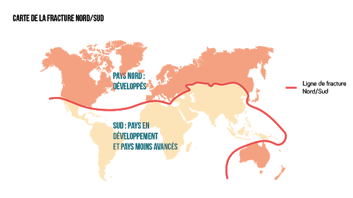
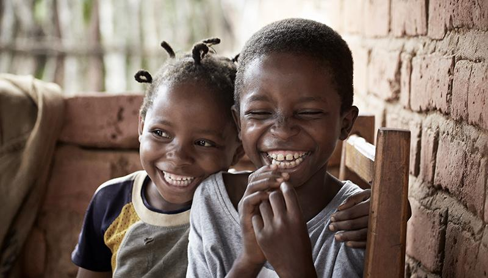
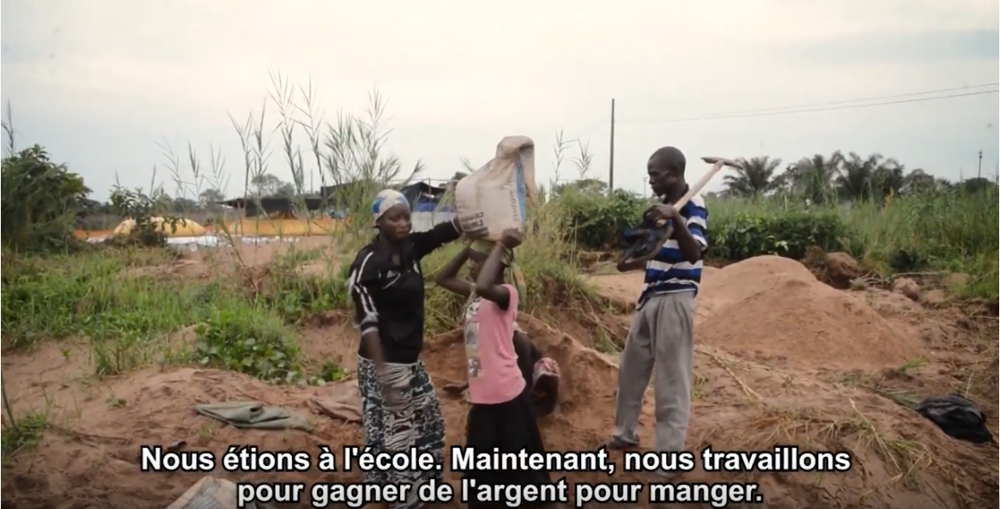
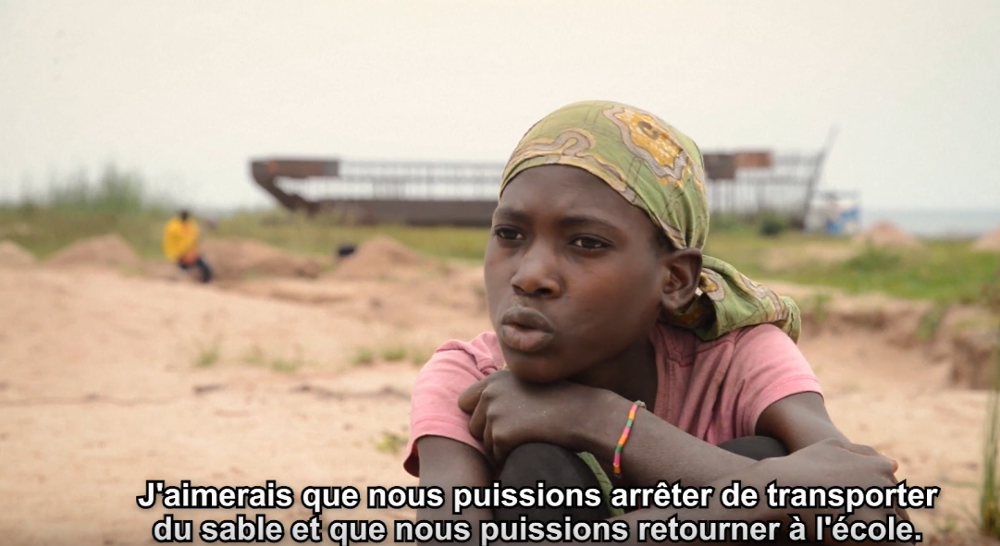

Nous allons à plusieurs reprises tenter d'établir des différences d'accès à l'éducation entre les pays du nord et les pays du sud. Mais à quoi correspondent ces deux catégories?
Pour comprendre au mieux l’étude concernant l’éducation dans le monde, il faut tout d’abord définir les termes suivants, qui ont pour but de mieux définir les différences de régions.
Les pays du Nord sont ceux qu’on caractérise de pays industrialisés et dont l'économie est importante et rayonne à l’international. Quant à ceux du Sud, ils ont une économie plus faible et des difficultés à plusieurs échelles et dans différents domaines, ils sont aussi appelés les “pays en développement”. Cependant cette frontière invisible dont la notion a été inventée en 1980, n’a plus la même valeur puisque certains pays comme la Chine est devenue l’une des premières puissances mondiales voire la première.
L’éducation se
caractérise par l’accès à l'enseignement. Dès le plus jeune
âge, les enfants ont la possibilité d’aller à l’école. Dans certains pays,
l’école maternelle et primaire sont obligatoires. Tandis que dans d’autres pays, les formations ne sont pas obligatoires. Ce qui signifie que les
parents ont le choix de scolariser ou non leurs enfants.
Les pays où l’éducation n’est pas une
priorité sont souvent des pays se trouvant dans des situations particulières ou
simplement n'ayant pas les moyens de rendre obligatoire l'éducation.
Par conséquent, l’accès à l’éducation dans le monde est très inégal.
Tout d’abord, les pays du Sud et les pays du Nord ne disposent pas des mêmes capacités en terme d’éducation. On peut parler de disparités d’infrastructures et de personnels. Le nombre d’écoles est parfois moindre ainsi que le nombre d’enseignants formés. Les salaires des enseignants sont parfois dérisoires ou même inexistants.

La scolarisation dépend de la volonté des parents
Les enfants sont sous la responsabilité de leurs parents. Si les parents décident que les enfants ne doivent pas aller à l’école (par exemple pour effectuer des travaux domestiques), les enfants doivent donc se soumettre à leur décision. Pour certains parents, envoyer leurs enfants à l’école est un réel "manque à gagner", puisqu’ils ne rapporteront pas d’argent mais en coûteront. D’autres décident cependant de les scolariser, mais cela représente un réel sacrifice. Les enfants eux-mêmes n’ont pas les moyens de d'auto financer leur scolarité c’est donc aux parents d’assumer cette responsabilité. Les enfants sont « assujettis » aux décisions de leurs parents.
Dans les pays peu développés, il n’y a pas de loi d’obligation pour la scolarisation des enfants. Des ONG telles que l’Unicef, Plan international, Care France se battent pour donner le droit pour tous les enfants du monde à un accès à l’éducation et d’autres droits fondamentaux (protection, satisfaction de leurs besoins alimentaires et sanitaires, etc.). Ils lancent aussi par exemple, certaines campagnes ayant pour but de parrainer un enfant afin qu’il puisse avoir accès à l’éducation et aux fournitures de base que la famille n’est souvent pas en capacité d’assumer. Malgré leurs implications, les efforts ne doivent pas venir seulement de l'extérieur du pays mais aussi du gouvernement lui même.

Malheureusement, de nos jours, encore trop d'enfants ne vont pas à l'école afin d'effectuer des tâches très difficiles, difficiles pour un adulte, mais alors pour un enfant quasi-impossibles. Si l'enfant dès plus son jeune âge effectue ces tâches, il y aura peu d'espoir pour un avenir meilleur. Ci-dessous quelques photos qui rendent compte de la dureté des tâches. L'école, et par conséquent les apprentissages sont inexistants parce que les enfants sont contraints à de dures heures de labeurs.
Dans ce court reportage, différents enfants prennent la parole et expliquent les difficiles tâches qu'ils effectuent et leur volonté profonde de retourner à l'école. Nous constatons aussi les actions de l'OIT (organisation international du travail) afin de lutter contre ce fléau et pour les informer sur leurs droits et donner aux enfants l'opportunité de commencer une formation payée. Une petite lueur d'espoir dans cette tragique situation?
 created with
Website Builder Software .